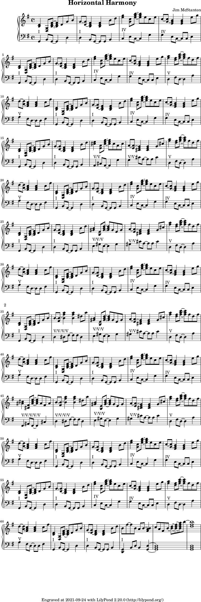

The goal with this piece was to just play with some harmonic ideas. To that end the melody is simple and static throughout, just following the chord progression. This starts with a I-IV-I-V progression in the key of G major to attempt to root the listener into that key then on subsequent repetitions of the melodies it starts to introduce new chords to point the listener forward using fifth of fifths (V/V). In the piece the chords are labelled with their respective roman numerals to ease following it.
I think this sounds pretty interesting and would definitely like to explore these ideas more.
